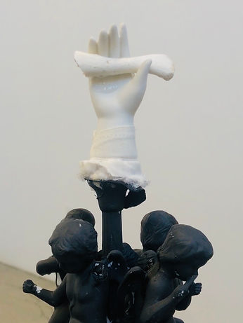
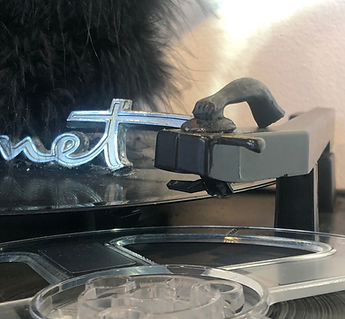

What's Mine Is Yours
A multipart residency with Stacey Goodman
November 1 - November 24, 2019
During Stacey Goodman's residency, he will use vinyl, turntables, speakers and other material related to DJ and mixing culture as sculptural material and ritualized performative objects. Through ritualistic performance with these art objects he will explore notions of ownership and appropriation.
This body of work draws upon the history of assemblage, a practice involving piecing together found objects into 3-D collages. Like the black pioneers of hip-hop culture in the 1960s and 70s, assemblage became the primary practice for black visual artists in Los Angeles. Artists such as Betye Saar, Noah Purifoy, and David Hammons, found inspiration in what happens when two or more carefully selected found objects, with disparate, unique histories come together in a singular work.
The history of DJ culture and mixing in rap music has a similar through-line. Both assemblage and mix culture encourage the belief that art thrives when everything belongs to everyone, and that notions of ownership ultimately hurt us all. Culture is what happens when you take something that you did not create yourself and make something new to give in return.
In our current moment when power and ownership is in the hands of the few, how might these notions of shared ownership help create a more just and creative society?
